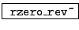

No finite set of prefabricated filters could fill every possible need, and so Pd provides the elementary filters of Sections 8.2.1-8.2.3 in raw form, so that the user can supply the filter coefficients explicitly. In this section we will describe patches that realize the shelving and peaking filters of Sections 8.3.3 and 8.3.5 directly from elementary filters. First we introduce the six Pd objects that realize elementary filters:
,
,
 :
elementary filters with real-valued coefficients operating on real-valued
signals. The three implement non-recirculating filters of the first and
second types, and the recirculating filter. They all have one inlet, at
right, to supply the coefficient that sets the location of the zero or pole.
The inlet
for the coefficient (as well as the left inlet for the signal to filter) take
audio signals. No stability check is performed.
:
elementary filters with real-valued coefficients operating on real-valued
signals. The three implement non-recirculating filters of the first and
second types, and the recirculating filter. They all have one inlet, at
right, to supply the coefficient that sets the location of the zero or pole.
The inlet
for the coefficient (as well as the left inlet for the signal to filter) take
audio signals. No stability check is performed.
,
 ,
,
:
elementary filters with complex-valued coefficients, operating on complex-valued
signals, corresponding to the real-valued ones above. Instead of two inlets and
one outlet, each of these filters has four inlets (real and imaginary part of
the signal to filter, and real and imaginary part of the coefficient) and
two outlets for the complex-valued output.
The example patches use a pair of abstractions to graph the frequency and phase responses of filters as explained in Example H10.measurement.pd. Example H11.shelving.pd (Figure 8.32, part a) shows how to make a shelving filter. One elementary non-recirculating filter (rzero~) and one elementary recirculating one (rpole~) are put in series. As the analysis of Section 8.3.9 might suggest, the rzero~ object is placed first.
Example H12.peaking.pd (part (b) of the figure) implements a peaking filter. Here the
pole and the zero are rotated by an angle  to control the center
frequency of the filter. The bandwidth and center frequency gain are equal to
the shelf frequency and the DC gain of the corresponding shelving filter.
to control the center
frequency of the filter. The bandwidth and center frequency gain are equal to
the shelf frequency and the DC gain of the corresponding shelving filter.
Example H13.butterworth.pd demonstrates a three-pole, three-zero Butterworth shelving filter. The filter itself is an abstraction, butterworth3~, for easy reuse.